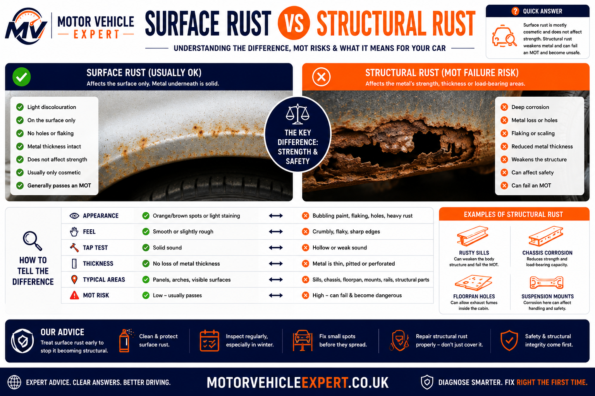
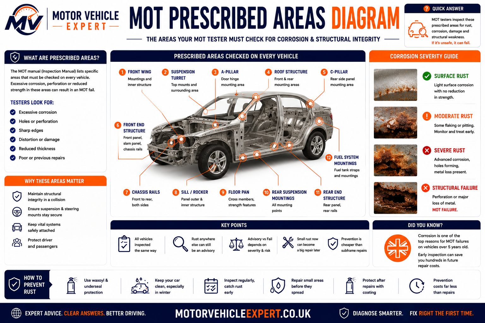
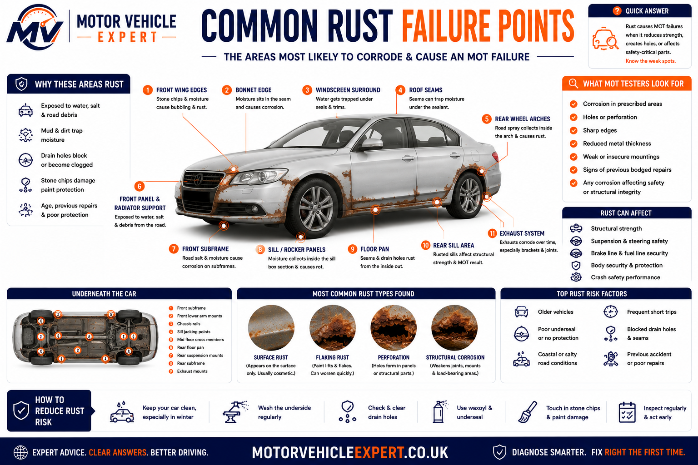
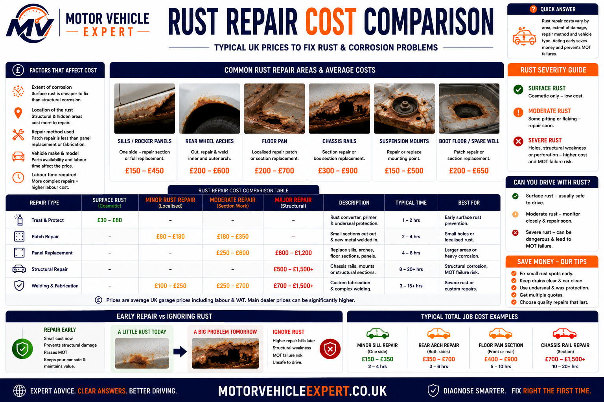

Can rust cause an MOT failure?
Yes. Rust can cause an MOT failure when corrosion significantly weakens a load-bearing part of the vehicle, affects the security of a safety-related component, damages a prescribed area, creates a dangerous sharp edge or leaves part of the body or chassis insecure.
Light surface corrosion does not automatically cause a failure. The MOT result depends on where the rust is located, how deeply it has affected the metal and whether the remaining structure can still perform its intended safety function.
Light Surface Corrosion
Orange staining or shallow corrosion may be acceptable when the metal remains firm, continuous and structurally sound.
Flaking Or Scaling Rust
Flaking layers and deep pitting can indicate that useful metal thickness is being lost, even before a hole becomes visible.
Perforated Structural Metal
Holes, fractures, softness or severe thinning in load-bearing structure can result in a major or dangerous defect.
Corroded Brake Pipes
Excessive corrosion can weaken a rigid brake pipe and compromise its ability to contain hydraulic pressure safely.
| Rust condition | Possible MOT outcome | Recommended action |
|---|---|---|
| Light surface staining on firm metal | Usually pass | Clean, treat and protect before it spreads |
| Moderate scaling or developing pitting | Pass, advisory or failure depending on location and remaining strength | Arrange a proper underside inspection |
| Small hole in a non-structural outer panel | Depends on panel security, sharp edges and hidden structure | Repair the panel and inspect behind it |
| Perforated sill, chassis rail or structural floor section | Major failure likely | Professional structural repair required |
| Corrosion around suspension, steering or seat-belt mountings | Major or dangerous failure possible | Do not delay professional assessment |
| Rigid brake pipe excessively corroded | Major failure likely | Replace the affected pipe correctly |
The tester is not judging whether the car looks old or untidy. The important questions are whether corrosion has reduced strength, affected component security, damaged a safety-critical area or created a danger.
Why corrosion is often worse than it first appears
Vehicle rust commonly develops inside seams, box sections and double-skinned panels before obvious damage appears externally. A sill may show only a small paint bubble while the inner reinforcement, lower seam or jacking structure has already lost significant metal.
This is why a car can appear tidy from above and still receive a serious corrosion defect when inspected underneath. Plastic sill covers, wheel-arch liners, undertrays, thick underseal and previous patch repairs can conceal areas where moisture, mud and road salt have remained trapped.
The most important clue is often not the visible size of the rusty patch but the condition of the metal around it. Corrosion that flakes away, sounds hollow, flexes around a mounting or extends beneath surrounding coating requires a much closer assessment.
Small Bubble, Large Hidden Repair
Paint bubbling may begin after corrosion has already formed behind the panel. Removing paint, filler or underseal can expose a much larger weakened section.
Repeated Advisory Becomes A Failure
Corrosion described as slight or developing can worsen between annual tests when no cleaning, treatment or permanent repair is carried out.
Fresh Underseal Hides Old Damage
Protective coating is valuable on properly prepared metal, but coating loose rust can conceal deterioration without restoring strength.
One Repair Reveals Another
Cutting away a corroded sill or floor section may expose weakened inner panels, reinforcements, seams or adjoining mountings.
A photograph can show visible damage but cannot confirm remaining metal thickness, hidden inner corrosion, mounting strength or the condition beneath underseal and trim. Serious rust requires physical inspection on suitable workshop equipment.
What vehicle rust and corrosion actually mean
Rust forms when iron or steel reacts with oxygen and moisture. Road salt, trapped dirt, damaged paint, poor drainage and repeated wetting accelerate the process. Once protective paint, galvanising, seam sealer or underbody coating is damaged, exposed metal becomes increasingly vulnerable.
Corrosion does not progress at one fixed rate. Two vehicles of the same age can have very different underside conditions depending on where they were driven, how they were stored, whether drainage remained clear and whether previous repairs were completed and protected properly.
Surface Oxidation
Light orange or brown discolouration develops on exposed metal while the section may still retain its original strength.
Pitting And Scaling
Corrosion begins penetrating the metal and creates pits, raised scale and flaking layers that reduce effective thickness.
Perforation
Continued metal loss produces holes, splits or openings that may extend much farther beneath paint and coating than expected.
Structural Corrosion
Rust affects metal that contributes to body strength, suspension location, component security, crash protection or occupant restraint.
Internal Corrosion
Moisture inside sills, chassis cavities, seams and crossmembers can attack unprotected surfaces from the inside out.
Recurring Corrosion
Rust can return around weak welds, overlapping patches, open seams and repairs that were not protected internally.
A large rusty mark on a cosmetic panel may be less serious than a small perforated area beside a suspension or seat-belt mounting. The function of the affected structure matters as much as the visible size of the corrosion.
How rust develops on UK cars
UK vehicles are regularly exposed to rain, damp roads, winter salt and repeated temperature changes. Moisture enters seams, drainage channels and hollow sections, where it may remain after the visible bodywork has dried.
Corrosion accelerates when protective coatings are damaged by stone chips, incorrect lifting, accident repairs, blocked drains or previous welding. Dirt and road salt then retain moisture against the steel and allow rust to continue beneath paint or underbody protection.
1. Protection Is Damaged
Paint, zinc coating, seam sealer or underbody protection is chipped, cracked, scraped or disturbed.
2. Moisture Reaches The Steel
Water, oxygen and road contaminants contact exposed metal and begin the corrosion process.
3. Rust Spreads Beneath Coatings
Corrosion expands under paint, sealant or underseal and may remain hidden from normal view.
4. Metal Thickness Is Reduced
Pitting and scaling remove material and reduce the strength of the affected section.
5. Holes And Weak Edges Form
Advanced corrosion causes perforation, crumbling edges and separation around seams or mountings.
6. Component Security Is Affected
The weakened structure may no longer support normal loads or retain attached components securely.
7. MOT Risk Increases
The condition may progress from early deterioration to an advisory, major defect or dangerous defect.
8. Repair Costs Rise
Delayed treatment can turn a small local repair into sill, floor, subframe or chassis reconstruction.
Road Salt And Coastal Air
Salt retains moisture and accelerates corrosion on exposed underside metal, seams and fasteners.
Blocked Drain Holes
Water trapped inside doors, sills, boot floors and body cavities can attack hidden surfaces continuously.
Stone Chips And Scraped Underseal
Floors, arches and jacking areas often begin rusting where protective material has been broken.
Poorly Protected Welding
Bare welds, unsealed joints and overlapping patches may corrode rapidly when moisture enters the repair.
Cabin And Boot Leaks
Failed seals, blocked drains and damaged membranes can cause floors and seat mountings to corrode from inside.
Plastic Covers And Liners
Covers can trap wet dirt against metal or conceal corrosion until removed during repair work.
Cleaning, drainage maintenance and cavity protection work best before substantial corrosion develops. Protective coating cannot replace structural thickness that has already been lost.
When rust can fail an MOT
Rust does not cause an MOT failure simply because it is visible. The tester considers whether corrosion has significantly weakened the structure, affected a safety-related component or mounting, created a dangerous edge or left part of the vehicle insecure.
Corrosion in prescribed areas receives particular attention because these sections support important steering, suspension, braking and restraint-system mountings. Structural deterioration outside a prescribed area can also fail where the vehicle’s overall rigidity or safety has been significantly reduced.
Load-Bearing Metal Is Weakened
Sills, chassis rails, crossmembers, floors and reinforced body sections must retain sufficient strength and continuity.
A Mounting Area Is Corroded
Corrosion around suspension, steering, braking or seat-belt mountings may reduce the security of the attached component.
Perforation Or Severe Thinning
Holes, fractures, deep pitting, softness and heavy scaling indicate substantial material loss.
Brake Pipes Are Excessively Corroded
Rigid brake pipes must remain strong, secure and capable of containing hydraulic pressure safely.
Dangerous Sharp Edges Exist
A corroded outer panel may fail where broken metal could cause injury or the panel has become insecure.
Previous Welding Is Inadequate
A repair can fail when it does not restore strength, is attached to weak metal or leaves the original structure insecure.
| Corrosion example | Why it matters | Possible MOT result |
|---|---|---|
| Light corrosion on a solid exhaust surface | No serious loss of strength, security or gas tightness | Pass when the exhaust remains secure and functional |
| Moderate scaling on a structurally sound subframe | May indicate developing deterioration | Pass or advisory depending on condition |
| Perforated load-bearing sill section | Body strength or a nearby prescribed area may be affected | Major failure likely |
| Corrosion around a suspension mounting | Can affect wheel control and mounting security | Major or dangerous failure depending on severity |
| Rigid brake pipe with excessive corrosion | Pipe strength and braking reliability may be reduced | Major failure likely |
| Rust hole creating a dangerous sharp edge | Could injure a person or leave the panel insecure | Failure possible |
| Professional repair extending into sound metal | Strength and component security have been restored | May pass when repair quality is satisfactory |
Corrosion can worsen between annual tests, and hidden damage may not have been visible previously. Serious rust can fail the first time it is discovered even when no earlier advisory appears in the MOT history.
The MOT is not judging appearance. It is assessing whether the remaining structure and components are sufficiently strong, secure and safe to perform their intended functions.
Surface Rust vs Structural Rust
Surface rust and structural rust can look similar at first, but they represent very different levels of deterioration. Surface corrosion affects the outer face of the metal, while structural corrosion has progressed far enough to reduce thickness, strength or continuity.
The visible size of the rusty area does not always show how serious it is. A broad patch of light corrosion on a solid outer panel may be less important than a small weakened section beside a suspension mounting, steering attachment or seat-belt anchorage.
Metal Remains Firm And Structurally Sound
Surface rust commonly appears as orange staining, light roughness, shallow pitting or minor paint bubbling. The section may still retain enough thickness and strength to perform its original function.
- ✓Metal remains firm during inspection.
- ✓No visible holes or broken seams.
- ✓No mounting or component security is affected.
- ✓The section broadly retains its original shape.
- !Cleaning and protection are still recommended.
Metal Strength Or Continuity Has Been Reduced
Structural corrosion develops when rust causes deep pitting, heavy scaling, fractures, softness, perforation or separation around seams and mounting points.
- !Metal flakes, cracks or crumbles.
- !Holes or splits have formed.
- !A load-bearing section has lost useful thickness.
- !A nearby component may no longer be securely supported.
- !Cutting and welding may be necessary.

Early surface rust can often be controlled with proper preparation and protection. Once substantial metal has been lost, coatings alone cannot restore the original strength.
| Inspection point | Surface rust | Structural rust |
|---|---|---|
| Appearance | Light staining, roughness or shallow corrosion | Heavy flaking, swelling, cracking or perforation |
| Metal condition | Firm and broadly retains its thickness | Thin, soft, fractured or missing in places |
| Safety effect | Normally limited when the section remains sound | May affect strength, mounting security or occupant protection |
| Typical repair | Clean, neutralise, prime and protect | Remove damaged steel and weld in sound replacement metal |
| Possible MOT result | Pass or advisory depending on condition | Major or dangerous defect depending on severity |
Filler, paint or underseal may hide the appearance of corrosion, but none of them replaces missing steel. A load-bearing repair must restore the strength and continuity of the original section.
What Is a Prescribed Area During an MOT Corrosion Check?
A prescribed area is part of the load-bearing structure surrounding certain safety-related component mountings. These areas receive closer attention because weakened metal could reduce the security of steering, suspension, braking or occupant-restraint components.
A rusty mark does not automatically fail simply because it lies near an important mounting. The tester considers whether the corrosion has materially weakened the structure supporting that component or whether a previous repair has restored sufficient strength.
Steering Mounting Areas
Structural metal supporting steering racks, steering boxes and related components must remain secure and sufficiently strong.
Suspension Mounting Areas
Areas around strut towers, spring seats, wishbone brackets and subframe mountings carry repeated road and cornering loads.
Seat-Belt Anchorage Areas
The surrounding structure must remain strong enough to support the belt anchorage during heavy braking or a collision.
Relevant Seat Mountings
Where the seat belt is attached to the seat itself, corrosion around the relevant seat mounting structure also matters.
Brake Component Mountings
Structural metal supporting relevant brake-system components must remain strong enough to resist normal operating forces.
Supporting Panels And Reinforcements
The condition of the metal surrounding the mounting matters, including connected seams, reinforcements and load-bearing panels.

Vehicle construction varies, so the exact inspection zones depend on the location of the mountings and the structural path that supports them.
A bolt or bracket may appear secure while the surrounding panel has become too weak to carry normal loads. The inspection therefore considers the condition of the complete supporting structure, not only the visible mounting.
How the MOT 30 cm Corrosion Rule Works
For certain safety-related mountings, the prescribed area generally includes load-bearing structure within 30 cm of the mounting. The distance is considered through the structure of the vehicle rather than as a simple flat circle around the component.
The purpose is to identify corrosion that could reduce the ability of the structure to hold the component securely during braking, steering, suspension movement or a collision.
1. Locate The Safety Mounting
The tester identifies the relevant steering, suspension, braking or restraint-system attachment.
2. Identify The Supporting Structure
Connected panels, reinforcements, seams and structural members are considered together.
3. Examine The Nearby Metal
The surrounding load-bearing area is checked for deep corrosion, weakness, fractures and poor repairs.
4. Judge Remaining Security
The final question is whether the mounting and surrounding structure remain strong enough for their intended function.
Signs The Structure Has Become Too Weak
- !Visible holes or fractured metal.
- !The section feels soft or unstable.
- !Heavy scaling has removed substantial thickness.
- !The mounting or surrounding panel can move.
- !A previous repair is attached to weak material.
- !The supporting structure has lost continuity.
Signs The Area Still Retains Strength
- ✓Metal remains firm and continuous.
- ✓No perforation or structural fracture is present.
- ✓The component remains securely mounted.
- ✓Any repair extends into sound surrounding steel.
- ✓The supporting panels retain adequate rigidity.
- !An advisory may still be appropriate.
The location determines where the tester must pay close attention, but the result still depends on the condition and remaining strength of the relevant load-bearing structure.
Corrosion beside a suspension, steering or seat-belt mounting should be assessed early. Treating or repairing it before substantial metal loss develops is usually safer and less expensive.
Common Rust and Corrosion MOT Failure Points
Rust develops most aggressively where moisture, salt and mud remain trapped, where drainage is poor and where protective coatings have been damaged. The following areas are among the most important places to inspect on older UK vehicles.
Outer And Inner Sills
Visible bubbling may conceal deterioration in the inner sill, reinforcement, lower seam or adjoining floor structure.
Jacking Points
Crushed seams and damaged coating can allow water to enter and weaken the sill assembly.
Chassis Rails And Crossmembers
Box sections can corrode internally and around seams, brackets, drain points and areas that retain road debris.
Spring Seats And Strut Towers
These sections absorb repeated suspension forces and can become dangerous if surrounding steel loses strength.
Front And Rear Subframes
Hollow pressings and upward-facing surfaces often collect wet dirt and road salt around mounting points.
Rigid Brake Pipes
Corrosion often develops beside retaining clips, bends and sections hidden above tanks, trays or subframes.
Floorpan Edges
Floor seams, drain plugs, seat mountings and sill connections may corrode after water entry or coating damage.
Boot Floor And Rear Crossmember
Water leaks and road spray can damage spare-wheel wells, boot floors and structural sections beneath the rear body.
Seat-Belt Anchorage Areas
Rust around floors, sills and pillars can reduce the security of the restraint mounting during a collision.
Wheel Arches
Outer-arch rust may remain cosmetic or spread into the inner arch, suspension tower, sill or floor.
Steering Rack Or Box Mountings
Supporting structure must remain strong enough to prevent unwanted movement and maintain steering control.
Body Mounts And Outriggers
Pick-ups, vans and four-wheel-drive vehicles can corrode around body mounts, outriggers and rear chassis sections.

The most serious rust is not always the most visible. A small weakened section close to an important mounting can present more risk than a larger cosmetic patch elsewhere.
Body design, drainage, previous repairs, local climate and road use all affect where rust develops. Previous MOT history can help identify areas that deserve closer inspection.
Can Rusty Sills Fail an MOT?
Yes. Sill corrosion can fail an MOT when it significantly weakens the load-bearing structure, affects a nearby prescribed area, reduces the security of a mounting or exposes an inadequate previous repair.
On many vehicles, the visible outer sill is only one part of a larger structural assembly. Inner sills, floor edges, closing panels and reinforcements may all contribute to body strength and safe lifting.
Paint Bubbling
Bubbles can indicate corrosion developing behind the coating before a visible hole forms.
Flaking Lower Seam
Swelling, splitting or crumbling along the sill seam may indicate deterioration where several panels join.
Holes Or Soft Sections
Perforation, softness or visible collapse in a load-bearing sill section can result in a major defect.
Crushed Jacking Point
Incorrect lifting can distort seams, remove protective coating and create an entry point for moisture.
Inner Sill Corrosion
An acceptable-looking outer patch may conceal weakened reinforcement or floor connections behind it.
Patch Over Existing Rust
Welding over deteriorated metal can trap moisture, leave weak layers beneath and fail to restore the original structure.
Signs of a Proper Sill Repair
- ✓Severely weakened metal has been removed.
- ✓Replacement steel reaches sound surrounding structure.
- ✓Inner reinforcements have been repaired where necessary.
- ✓Welds are secure and appropriate for the panel construction.
- ✓Seams have been sealed against water entry.
- ✓Internal cavity protection has been applied.
Signs of a Poor Sill Repair
- !A new plate covers loose or crumbling rust.
- !Welds are attached to visibly thin metal.
- !Inner structural layers remain damaged.
- !Thick filler or sealant conceals repair edges.
- !The jacking point remains distorted or unstable.
- !Corrosion is returning around the repair.
A badly corroded jacking point can collapse under the vehicle’s weight. Confirm the correct lifting location and structural condition before placing a jack or workshop lift beneath it.
Chassis Rail and Subframe Corrosion
Chassis rails, crossmembers and subframes support major parts of the vehicle and carry forces created by braking, steering, cornering, suspension movement and road impacts. Corrosion in these areas can become serious before a complete hole is visible because thick scale may conceal substantial loss of metal underneath.
Detachable subframes are especially exposed to winter salt, standing moisture and road debris. Rust commonly develops around seams, drainage openings, mounting bushes, suspension brackets and upward-facing sections where wet dirt can remain trapped.
Light Surface Scaling
Shallow scaling may remain manageable when the metal is still firm and the supporting structure retains adequate thickness.
Deep Pitting
Deep pits, lifting layers and rough swollen sections indicate that corrosion is progressing into the metal.
Perforation Or Fracture
Holes, splits, crumbling seams or missing sections can substantially reduce structural rigidity or mounting security.
Subframe Bush Corrosion
Weak metal around a mounting bush can allow movement and affect suspension geometry, steering response and tyre wear.
Outriggers And Body Mounts
Pick-ups, vans and four-wheel-drive vehicles may corrode around outriggers, body supports and rear chassis crossmembers.
Replacement Or Fabrication
A detachable subframe may be replaceable, while corrosion in an integral chassis member may require specialist fabrication.
Signs A Subframe Needs Urgent Assessment
- !Thick rust scale separates from the surface.
- !Seams have opened or split.
- !Mounting areas appear swollen or distorted.
- !Rust surrounds suspension brackets.
- !The metal sounds hollow or feels weak.
- !Previous advisories have appeared repeatedly.
What A Professional Inspection Should Check
- ✓Condition around every mounting point.
- ✓Seams, brackets and welded joints.
- ✓Areas hidden above trays or shields.
- ✓Remaining metal thickness and rigidity.
- ✓Availability and cost of replacement parts.
- ✓Condition of surrounding body mountings.
Aggressive probing can damage weakened metal and may be unsafe when the vehicle is supported incorrectly. Structural sections should be assessed using suitable workshop equipment and controlled inspection methods.
Suspension Mounting Corrosion
Suspension mountings transfer road forces into the vehicle body, chassis or subframe. Rust around these points can affect wheel location, steering behaviour, ride control and vehicle stability.
Even a relatively small corroded area can be serious when it sits beside a spring seat, strut tower, wishbone bracket or subframe mounting. The surrounding structure must remain strong enough to resist repeated suspension loads.
Strut Towers
Inspect upper mounting plates, seams and surrounding inner-wing structure for swelling, cracking and perforation.
Spring Seats
Dirt and moisture can collect around pressed-steel spring platforms and weaken the structure supporting the spring.
Wishbone Mountings
Corrosion around brackets and reinforcing panels can alter suspension position or reduce component security.
Shock Absorber Mounts
Weak upper or lower mountings may permit movement, cracking, noise or eventual separation.
Body Mounting Points
Rust around subframe attachment points may affect several steering and suspension components at the same time.
Repaired Mounting Areas
Replacement steel must extend into sound structure and restore the support provided by the original reinforcement.
Severe deterioration can allow a mounting to move or separate under load. Arrange recovery rather than driving if a spring seat, strut tower, control-arm bracket or subframe mounting appears unstable.
Floorpan and Boot-Floor Corrosion
The floorpan connects major parts of the body structure and supports seats, seat belts, interior components and sections of the vehicle underside. Corrosion may develop around seams, drain plugs, lifting damage, water leaks and the inner edges of the sills.
Floor rust can begin from either side. Road salt and damaged underbody protection attack the underside, while leaking windscreens, doors, sunroofs or boot seals can keep the interior metal wet beneath carpets and trim.
Wet Carpets And Soundproofing
Water trapped beneath thick insulation can remain unnoticed and corrode the floor from inside the passenger compartment.
Seat Mounting Areas
Rust around seat rails and reinforcement points can affect seat stability and restraint-system security.
Spare-Wheel Well
Boot-seal leaks and blocked drains may leave standing water hidden beneath the spare wheel and luggage trim.
Floor-To-Sill Seams
Corrosion can spread along the seam joining the floor to the inner sill and weaken both structural sections.
Boot Floor And Crossmember
Deterioration may extend from the boot floor into bumper supports, suspension mountings or rear subframe areas.
Incorrect Jacking Or Impact Damage
Distorted floor sections and scraped coating can expose seams and create places where moisture accumulates.
Welding a corroded section without correcting the leaking seal, blocked drain or damaged coating can allow the same problem to return.
Can Corroded Brake Pipes Fail an MOT?
Yes. A rigid brake pipe can fail an MOT when corrosion or damage has become excessive. Brake pipes must contain high hydraulic pressure whenever the pedal is applied, so serious deterioration creates a direct braking-safety risk.
Corrosion commonly develops beneath retaining clips, around bends, beside the rear axle and in routes hidden above fuel tanks, undertrays or subframes. A pipe may look reasonable along most of its length while one concealed section is badly weakened.
Light Surface Discolouration
Minor external staining may remain acceptable when the pipe is solid, secure and free from deep pitting.
Scaling Around Clips
Moisture and road debris can collect around clips and create localised rust that is worse than the visible pipe surface.
Deep Pitting Or Flaking
Severe pitting, rough swelling or lifting layers can indicate that the pipe wall has lost substantial material.
Active Brake Fluid Leak
A leaking pipe or connection can reduce hydraulic pressure and should be treated as an urgent safety defect.
Loose Or Missing Clips
Inadequate support can allow a pipe to vibrate, rub against nearby parts or become damaged.
Correct Pipe Routing
Replacement pipes should follow a safe route, remain properly supported and avoid exhaust heat and moving components.
| Brake-pipe condition | Safety concern | Recommended response |
|---|---|---|
| Light surface staining | Usually limited when the pipe remains firm | Clean carefully, protect and monitor |
| Rust concentrated around a clip | Hidden localised thinning may be present | Inspect the complete circumference and nearby route |
| Deep pitting or heavy scaling | Pipe strength may be reduced | Replace the affected section correctly |
| Pipe wet with brake fluid | Hydraulic pressure may be lost | Do not drive; arrange urgent repair |
| Pipe rubbing or insecure | Future fracture or leakage may develop | Restore correct support and routing |
Scraping or wire-brushing a severely weakened line may expose a leak. Arrange professional assessment and replacement rather than trying to improve its appearance before the MOT.
Continue with our corroded brake pipe advisory guide and car fails MOT on brakes guide.
Wheel Arches, Wings and Outer Body Panels
Rust on an outer body panel does not automatically cause an MOT failure. The important questions are whether the panel remains secure, whether broken metal creates a dangerous edge and whether the corrosion has spread into structural sections behind the visible panel.
Cosmetic Wheel-Arch Rust
Light bubbling on an outer arch may remain cosmetic when the inner arch and suspension structure are sound.
Inner Wheel-Arch Corrosion
Rust behind the outer panel may extend into strut towers, sills, floors or suspension supporting metal.
Front Wing Corrosion
A rusty bolt-on wing may be non-structural but must remain secure and free from dangerous projections.
Doors And Tailgates
Corrosion becomes more serious when a door or tailgate is insecure, cannot close properly or exposes sharp metal.
Corroded Hinges And Mountings
Weak mounting points can allow a body panel to move, sag or become detached.
Paint And Filler
Fresh refinishing may hide returning corrosion and should not be treated as evidence that the underlying metal is sound.
The outer arch may be cosmetic, but the inner wheel housing can form part of the suspension, sill or floor structure. The visible panel alone does not reveal the full condition.
Sharp Edges and Insecure Corroded Panels
Corrosion can create an MOT defect even where the affected panel is not load-bearing. Jagged metal, projecting edges or an insecure body panel may present a risk to pedestrians, passengers or anyone working around the vehicle.
Dangerous Projection
Broken metal that projects from the body may require immediate repair, safe removal or proper panel replacement.
Loose Wing Or Bumper
Corroded brackets or fasteners can allow a panel to move and potentially detach while the vehicle is being driven.
Corroded Door Edge
Rust affecting a door’s security, latch operation or ability to close properly can become an MOT concern.
Tape, Filler Or Trim
Covering a sharp edge may reduce immediate contact risk but does not repair insecure metal or structural corrosion.
The panel must still be secure, and any underlying structural weakness must be repaired correctly. Tape or filler cannot restore mounting strength.
What MOT Testers Look for When Checking Rust
The tester examines accessible structural and safety-related areas and considers the location of the corrosion, the condition of the remaining metal, the security of attached components and the quality of any previous repairs.
The MOT is a visual and physical inspection of accessible areas. Testers do not normally remove trim, undertrays or body coverings simply to search for hidden rust, so corrosion may exist behind components that could not be seen during the test.
1. Identify The Location
The tester determines whether the affected section is structural, prescribed, safety related or cosmetic.
2. Assess The Metal
Visible holes, softness, fractures, heavy scaling and significant loss of thickness are considered.
3. Check Component Security
Steering, suspension, braking, seating and restraint-system mountings must remain securely supported.
4. Examine Previous Repairs
Replacement steel and welding must appear suitable for the structure and extend into adequately strong metal.
| Condition observed | Possible classification | What it means for the vehicle |
|---|---|---|
| Light surface corrosion on sound metal | Pass or advisory | No significant reduction in safety or structural strength |
| Developing corrosion close to failure level | Advisory possible | Repair or treatment should not be delayed |
| Significant weakening of load-bearing structure | Major defect | Repair is required before an MOT pass can be issued |
| Corrosion likely to affect steering or braking | Dangerous defect possible | The vehicle may present an immediate road-safety risk |
| Previous structural repair is inadequate | Major or dangerous defect | The repair must be completed again to a suitable standard |
| Corroded panel creates an injury risk | Failure possible | The dangerous edge or insecure panel must be corrected |
A valid MOT confirms that the vehicle met the inspection requirements at the time of the test. It does not guarantee that concealed cavities, covered seams or inaccessible structures are free from rust.
Rust Severity Guide: Cosmetic to Dangerous
Rust should be assessed by its depth, location and effect on the vehicle rather than by colour alone. The four levels below provide a practical guide to how corrosion may progress.
Cosmetic Surface Rust
Light staining, shallow bubbling or minor roughness with firm metal and no effect on component security.
Developing Corrosion
Noticeable pitting, scaling or seam deterioration that is beginning to reduce metal condition.
Structural Weakness
Severe thinning, softness, perforation, fracture or deterioration around a load-bearing section.
Immediate Safety Danger
A mounting, brake pipe or main structural section is at risk of failing or affecting control of the vehicle.
Winter salt, trapped water and repeated loading can turn developing rust into perforation. An annual MOT should not be the only time the underside is inspected.
What a Rust or Corrosion Advisory Means
A corrosion advisory records deterioration that was seen during the test but was not considered severe enough to fail at that time. It should be treated as an early warning that the affected metal is moving closer to the failure threshold.
An advisory does not promise that the vehicle will remain safe until the next MOT. Rust can spread between tests, especially when it is exposed to winter road salt, trapped moisture or continued structural loading.
New Corrosion Advisory
Locate the exact area, photograph it and arrange inspection while treatment or repair may still be relatively limited.
Repeated Advisory
Similar wording across several MOT tests suggests the corrosion has not been repaired and may be continuing to spread.
Advisory Becomes A Defect
Once strength, security or safety is sufficiently affected, the same area can be recorded as a major or dangerous defect.
What To Do After A Rust Advisory
- ✓Ask the tester to identify the exact location.
- ✓Inspect the surrounding and hidden structure.
- ✓Obtain a repair quotation before corrosion spreads.
- ✓Correct any water leak or drainage problem.
- ✓Protect sound metal after proper preparation.
What Not To Do
- !Do not assume the advisory is harmless.
- !Do not cover the area with fresh underseal only.
- !Do not wait for a visible hole to develop.
- !Do not ignore repeated advisory wording.
- !Do not rely on photographs instead of inspection.
Continue with our MOT advisory meaning guide, structural corrosion advisory guide and how long you can drive with an MOT advisory guide.
Early investigation may allow a small treatment or local repair. Waiting until structural perforation develops can turn the same problem into extensive fabrication work.
How MOT Rust and Structural Corrosion Should Be Repaired
A proper corrosion repair must restore the strength, continuity and security of the original structure. Welding a plate over visible rust without removing weakened metal may hide the hole, but it does not necessarily restore the vehicle safely.
The repair area should be exposed sufficiently to establish how far the corrosion has spread. Damaged steel is then removed until the technician reaches sound surrounding metal capable of supporting the replacement section.
1. Expose The Full Area
Paint, underseal, filler and loose corrosion are removed so the true extent of the damage can be assessed.
2. Check Hidden Structure
Inner sills, reinforcements, floor connections, seams and mounting supports are inspected before fabrication begins.
3. Remove Weak Metal
Severely thinned, fractured or perforated steel is cut away until the remaining structure is firm and suitable for repair.
4. Fabricate The New Section
Replacement steel is shaped to reproduce the structural form, panel overlap and reinforcement required by the vehicle.
5. Weld To Sound Structure
The new section is joined using a repair method appropriate to the panel design, steel type and original construction.
6. Protect The Repair
Primer, seam sealer, paint, underbody protection and internal cavity wax help prevent moisture entering the repaired area.
7. Refit Components Correctly
Pipes, wiring, clips, trims, heat shields and drainage openings must be restored without creating new rubbing or water traps.
8. Inspect The Finished Work
The repair should be checked for strength, security, sealing and safe clearance before the vehicle is returned for retesting.
Small Structural Patch
A local repair may be suitable where corrosion is limited and strong surrounding steel remains available on every side.
- ✓The full damaged area is accessible.
- ✓Nearby reinforcements remain sound.
- ✓Replacement steel can reach firm metal.
- ✓The repair restores the original load path.
Section Or Panel Replacement
Wider corrosion may require replacement of an outer sill, inner sill, floor edge, crossmember, spring seat or complete detachable subframe.
- ✓Multiple structural layers can be restored.
- ✓Hidden rust is not left behind the repair.
- ✓Mounting geometry can be preserved accurately.
- ✓Long-term protection can be applied internally.
Structural work requires suitable access, fabrication skill, knowledge of the vehicle’s construction and control of fire, fuel, electrical and high-voltage risks. Major corrosion repairs should be completed by a competent body or welding specialist.
Poor Welding, Patch Repairs and Hidden Corrosion
Previous welding should be inspected as carefully as the original corrosion. A repair may look tidy after paint or underseal has been applied while weak metal, incomplete joining or untreated internal rust remains underneath.
What Good Structural Work Usually Shows
- ✓Corroded steel has been removed rather than covered.
- ✓The repair extends into firm surrounding metal.
- ✓Inner panels and reinforcements have been restored.
- ✓Welds are secure and appropriate to the construction.
- ✓Seams and cavities have been protected afterwards.
- ✓Drainage openings remain functional.
Warning Signs That Need Investigation
- !A plate is welded directly over loose scale.
- !Repair edges are hidden beneath thick filler.
- !Welds are attached to visibly thin steel.
- !Inner corrosion remains visible behind the patch.
- !Rust is returning around the repair perimeter.
- !The section remains distorted, flexible or insecure.
Paint and underbody coating can conceal workmanship. When buying a repaired vehicle, ask for photographs showing the damaged metal removed, the inner structure exposed and the replacement steel before final finishing.
Typical UK Rust and Corrosion Repair Costs
Rust repair prices vary according to access, labour time, panel availability, paintwork, the number of structural layers affected and how far corrosion spreads after the area is opened. The figures below are broad UK planning estimates rather than fixed quotations.
Surface treatment is relatively inexpensive when completed early. Costs rise sharply when a garage must remove trim, support the vehicle, fabricate several panels, restore mountings or dismantle suspension and braking components.
Surface Rust Treatment
Cleaning, rust treatment, primer and local protective coating where the metal remains sound.
£30–£150Small Welded Patch
Limited cutting and fabrication on an accessible floor, sill or non-complex structural section.
£150–£450Outer Sill Replacement
Removal and replacement of the visible outer sill where the inner structure remains usable.
£350–£900 per sideInner and Outer Sill Repair
Repair of several layers, reinforcements, floor edges and jacking structure.
£700–£1,800+ per sideRigid Brake Pipe Replacement
Replacement depends on pipe length, routing, access, unions and whether several lines are affected.
£120–£450+Spring Seat or Mount Repair
Fabrication around suspension support areas where accurate alignment and strong surrounding metal are essential.
£300–£1,200+Subframe Replacement
Includes the replacement part, labour, seized fasteners and possible wheel alignment.
£500–£1,800+Wheel-Arch Repair
Cost depends on whether corrosion is cosmetic or has spread into the inner arch and structural seams.
£250–£1,000+Chassis or Multi-Area Welding
Extensive repairs involving several structural sections, mountings or custom-fabricated panels.
£1,500–£4,000+
The final quotation may increase after coatings and damaged panels are removed because hidden corrosion often extends beyond the visible area.
| Repair situation | Work commonly required | Broad UK planning cost |
|---|---|---|
| Early surface corrosion | Clean, treat, prime and protect | £30–£150 |
| Small local perforation | Cut out and weld a limited repair section | £150–£450 |
| Outer sill corrosion | Replace outer panel and refinish | £350–£900 per side |
| Inner and outer sill damage | Multi-layer structural reconstruction | £700–£1,800+ per side |
| Corroded rigid brake pipes | Fabricate, route, secure and bleed the system | £120–£450+ |
| Corroded detachable subframe | Replace frame, fasteners and complete alignment checks | £500–£1,800+ |
| Extensive chassis or floor corrosion | Major dismantling and custom fabrication | £1,500–£4,000+ |
A fixed price may only cover the visible section. Ask how the garage will handle additional inner-panel damage discovered after the area is opened and whether paint, sealing, cavity wax and the MOT retest are included.
A £1,500 structural repair may still be sensible on a well-maintained valuable vehicle. The same repair may be difficult to justify where the car also needs tyres, brakes, suspension, timing work and further corrosion repairs.
Can You Drive a Car With Serious Rust?
Light cosmetic rust does not normally prevent normal driving. Structural corrosion is different because it can affect suspension location, steering support, braking reliability, occupant restraint and the ability of the vehicle to carry normal road loads.
Cosmetic Surface Rust
Driving may remain reasonable when the metal is sound and no component, mounting or sharp edge is affected.
Heavy Scaling or Soft Metal
Avoid unnecessary driving until the sill, floor, chassis or subframe has been assessed properly.
Dangerous Structural Defect
Recovery is appropriate where steering, suspension, braking or a major mounting could fail.
A dangerous defect indicates an immediate road-safety risk. Arrange recovery to a competent repairer rather than driving the vehicle away from the test station.
Rust Checks to Complete Before the MOT
1. Read Previous MOT History
Identify repeated corrosion advisories and check whether repairs are supported by invoices or photographs.
2. Check Sills and Jacking Points
Look for bubbling, crushed seams, loose underseal, holes and previous welded patches.
3. Inspect the Underside Safely
Use a professional lift or inspection ramp rather than working beneath a vehicle supported only by a jack.
4. Inspect Brake-Pipe Routes
Pay attention to clips, bends, rear axle areas and pipes concealed above tanks or subframes.
5. Check Suspension Mountings
Inspect spring seats, strut towers, wishbone supports and subframe attachment points.
6. Inspect the Interior for Water
Damp carpets, boot trim and spare-wheel wells may reveal hidden floor corrosion.
7. Assess Previous Welding
Look for returning rust, heavy filler, overlapping plates and repairs that do not reach sound metal.
8. Obtain Quotes Before the Test
Early inspection gives you time to compare repair options rather than making a rushed decision after failure.
Should You Buy a Used Car With Rust?
A small amount of cosmetic corrosion does not automatically make a used car a poor purchase. The important issues are whether rust has reached structural sections, whether repairs were completed properly and whether the asking price reflects future work.
Positive Buying Signs
- ✓Only light surface corrosion is visible.
- ✓The underside is accessible for inspection.
- ✓No repeated structural advisories appear.
- ✓Repair invoices and progress photographs exist.
- ✓Welded areas extend into sound metal.
- ✓Drainage and cavity protection have been maintained.
Major Red Flags
- !Fresh black underseal was applied immediately before sale.
- !Structural rust appears repeatedly in MOT history.
- !Several overlapping welded patches are visible.
- !Suspension, steering or seat-belt areas are affected.
- !The seller refuses an independent underside inspection.
- !Repair costs approach or exceed the vehicle’s sound value.
Minor Cosmetic Corrosion
May be acceptable when the price allows for treatment and the surrounding structure is confirmed sound.
Historic Welding Repairs
Repairs can be acceptable, but workmanship, internal protection and the condition around each repair must be checked.
Multiple Structural Areas
Rust affecting sills, chassis, subframes, mountings and brake pipes together can make the vehicle uneconomical.
Review the full history and arrange an underside inspection. A valid MOT does not guarantee that concealed cavities, covered seams or inaccessible structures are free from corrosion.
Continue with our used car inspection checklist, MOT history checking guide and buying a car with failed MOT history guide.
Can Fresh Underseal Hide MOT Rust Problems?
Yes. Underbody protection is useful when applied to clean, dry and properly prepared metal, but thick new coating can also conceal deteriorated seams, poor welding and active corrosion.
Signs of a Well-Prepared Underside
- ✓Loose corrosion was removed first.
- ✓The metal was cleaned and dried.
- ✓Seams were inspected and resealed.
- ✓Drainage openings remain clear.
- ✓Cavities received suitable internal protection.
- ✓Photographs show the condition before coating.
Signs Underseal May Be Hiding Damage
- !It was applied immediately before sale.
- !Thick coating covers repair edges and welds.
- !The surface feels swollen, soft or hollow.
- !Drainage points are blocked.
- !No preparation records are available.
- !Rust is breaking through the fresh coating.
Which Vehicles Are More Likely to Develop Serious Corrosion?
Any steel-bodied vehicle can rust. Age alone does not determine condition; exposure, construction, storage, drainage and repair history are often more important than the badge on the bonnet.
Cars Used on Salted Roads
Frequent winter driving exposes floors, subframes, brake pipes and seams to corrosive salt deposits.
Vehicles Kept Near the Sea
Salt-laden air can accelerate corrosion on exposed metal, fasteners, brake pipes and underside components.
Pick-Ups and Separate-Chassis 4x4s
Outriggers, rear chassis rails, crossmembers and body mountings can retain mud and moisture.
Cars With Water-Trapping Body Cavities
Blocked sill, door, scuttle, sunroof and boot drainage allows hidden internal corrosion to develop.
Vehicles With Accident Repairs
Disturbed coatings, poor seam sealing and unprotected replacement panels may rust earlier than original metal.
Cars Parked on Damp Ground
Grass, soil and poorly ventilated storage can keep the underside damp for long periods.
Vehicles That Sit Unused
Low mileage does not prevent rust when moisture remains trapped and the underside rarely dries fully.
Models With Recurring Corrosion Areas
Some designs repeatedly trap moisture around particular arches, sills, crossmembers or subframes.
Cars Without Underside Inspection
Corrosion can progress unnoticed when servicing focuses only on the engine and visible bodywork.
A well-protected older car may be considerably better underneath than a newer vehicle exposed to salt, water leaks and poor repairs. Inspect the individual car rather than relying on age or reputation alone.
Why Vehicle-Specific Repair Information Matters
Modern body structures use different steel grades, reinforcements, adhesives, coatings and joining methods. A repair technique that is suitable for one sill or floor section may be inappropriate for another vehicle.
Steel Type and Thickness
Replacement material should be appropriate for the original structure rather than selected only because it is available.
Approved Joining Method
Some sections require particular weld spacing, seams, plugs, bonding or panel-replacement procedures.
High-Strength Structure
Heat can change the properties of certain modern steels, so repair guidance should be checked before welding.
Suspension Geometry
Mounting repairs must preserve alignment and the original position of brackets, subframes and suspension points.
Electrical and Fuel Safety
Welding may require battery isolation, component removal and protection of wiring, fuel lines and control modules.
Hybrid and Electric Vehicles
High-voltage systems introduce additional isolation, training and repair precautions before structural work begins.
A competent repairer should consider manufacturer body-repair information, material type, original panel construction and nearby safety systems before cutting or welding.
How to Slow Down Vehicle Rust and Corrosion
Wash Road Salt Away
Clean wheel arches, suspension areas and the underside regularly during and after winter.
Keep Drain Holes Clear
Check doors, sills, scuttle panels, sunroof drains, boot channels and spare-wheel wells.
Repair Stone Chips Early
Treat exposed steel before corrosion spreads underneath the surrounding paint.
Use Suitable Cavity Protection
Properly applied cavity wax can protect internal sill, door and chassis surfaces that are difficult to inspect.
Check the Underside Before Winter
Early inspection can identify damaged coating, blocked drains and new rust before substantial metal is lost.
Repair Cabin and Boot Leaks
Wet carpets and luggage compartments should be investigated rather than repeatedly dried.
Use Correct Jacking Points
Incorrect lifting can crush seams, remove protective coating and start corrosion in structural areas.
Seal New Welding Properly
Repaired seams, bare steel and internal cavities need suitable protection after fabrication.
Keep the Vehicle Ventilated
Dry, well-ventilated storage is preferable to parking for long periods above wet grass or soil.
Protective coating and cavity wax are preventative measures. Metal that has already become severely thin, fractured or perforated requires proper structural repair.
Practical Rust Inspection Advice
Start With the MOT History
Repeated wording often identifies the exact section most likely to need repair next.
Inspect Both Sides
Visible corrosion on one sill, arch or subframe side should prompt comparison with the opposite side.
Look Beyond the Hole
The repair normally extends farther than the visible opening because surrounding metal may also be thin.
Check for Water Traps
Rust will return if blocked drainage, leaking seals or wet interior insulation are not corrected.
Photograph Repairs in Stages
Images before coating provide useful evidence of the steel removed, inner structure and completed fabrication.
Price the Whole Vehicle
Consider brakes, tyres, suspension, servicing and future rust areas before approving major welding.
What to Remember About Rust and the MOT
What Drivers Should Remember
- ✓Visible rust does not automatically mean MOT failure.
- ✓Location and remaining strength determine the risk.
- ✓Prescribed areas protect important safety mountings.
- ✓Repeated advisories should be investigated early.
- ✓Proper welding must reach sound surrounding steel.
- ✓Early treatment is normally much cheaper than reconstruction.
What Drivers Should Avoid
- !Covering active corrosion with underseal only.
- !Ignoring repeated MOT corrosion advisories.
- !Lifting the car on a weak jacking point.
- !Driving with a dangerous structural defect.
- !Buying without an underside inspection.
- !Judging welding only by its painted appearance.
Do not judge rust only by colour or visible size. Identify the structure involved, inspect the surrounding metal and determine whether strength, security and safe operation remain intact.
Continue Through Our MOT, Corrosion and Used-Car Guides
Corrosion can affect structural strength, brake pipes, suspension mountings, MOT history and the value of a used vehicle. Continue with the most relevant Motor Vehicle Expert guides below.
Understand Rust Warnings
Learn what corrosion advisories mean, how deterioration progresses and when repair should be prioritised.
Prepare for Common MOT Problems
Explore how structural, braking and suspension defects can cause an MOT failure.
Avoid Buying Hidden Corrosion
Review MOT history, inspect the underside and understand repair exposure before buying.
Where corrosion appears repeatedly in MOT history, arrange an underside inspection before paying for cosmetic work or agreeing to buy the vehicle.
Rust and MOT FAQs
Can rust fail an MOT?
Yes. Rust can fail an MOT when corrosion significantly weakens structural metal, affects a safety-related mounting, damages a component such as a brake pipe or creates a dangerous sharp edge.
Can surface rust fail an MOT?
Light surface rust does not normally fail by itself when the metal remains firm and no structure, mounting or safety component is affected.
Can rusty sills fail an MOT?
Yes. Sill corrosion can fail when the load-bearing structure is significantly weakened, perforated or inadequately repaired.
What is structural corrosion?
Structural corrosion is deterioration that reduces the strength, thickness or continuity of metal contributing to the body, chassis, a mounting or occupant safety.
What is an MOT prescribed area?
A prescribed area is load-bearing structure surrounding specified safety-related mountings, including relevant steering, suspension and seat-belt attachments.
How does the MOT 30 cm rule work?
Relevant load-bearing structure within 30 cm of certain safety-related mountings is assessed for significant weakness, fractures, perforation and inadequate repairs.
Can a rusty subframe fail an MOT?
Yes. A subframe can fail when corrosion significantly reduces its strength or affects suspension, steering or mounting security.
Can corroded brake pipes fail an MOT?
Yes. Excessively corroded rigid brake pipes can fail because material loss may compromise hydraulic braking safety.
Can wheel-arch rust fail an MOT?
Cosmetic wheel-arch rust may pass, but failure is possible where corrosion creates dangerous edges, leaves a panel insecure or reaches structural inner sections.
Can poor welding fail an MOT?
Yes. A repair can fail when it does not restore adequate structural strength, is attached to weak metal or leaves a mounting insecure.
Does rust always receive an advisory before failing?
No. Severe or concealed corrosion may fail when first discovered even where no earlier advisory appears in the MOT history.
Should I worry about a corrosion advisory?
Yes. Corrosion normally progresses when untreated, and repeated advisories can become failures as metal thickness and strength decrease.
Can underseal hide structural rust?
Yes. Thick or recently applied underseal can conceal corrosion, welding and deteriorated seams, although correctly applied protection is useful on prepared sound metal.
How much does rust repair cost in the UK?
Minor treatment may cost around £30 to £150, local welding around £150 to £450 and major sill, subframe or chassis work from several hundred pounds to £4,000 or more.
Can I drive with structural corrosion?
It depends on severity. A vehicle with a dangerous defect, insecure mounting, weakened brake pipe or immediate structural risk should not be driven.
Is it worth repairing rust on an old car?
It depends on the vehicle’s value, overall condition, repair extent and future maintenance needs. Multiple structural repairs may exceed the economic value of some older cars.
Should I buy a used car with rust advisories?
Only after an independent underside inspection and realistic repair quotation. Repeated sill, chassis, subframe or brake-pipe advisories deserve particular caution.
How can I slow down vehicle corrosion?
Wash away road salt, keep drainage clear, repair damaged paint, correct water leaks and protect clean, dry metal with suitable coatings and cavity wax.
Can a car pass after structural rust has been welded?
Yes. A vehicle may pass when the repair restores adequate strength and security, reaches sound surrounding metal and is suitable for the original structure.
Can an MOT tester remove underseal to inspect rust?
The MOT is primarily an inspection of accessible areas. Testers do not normally dismantle the vehicle simply to search for hidden corrosion, although visible suspect areas and coating condition can still be assessed.
Rust Is Easier to Control When It Is Found Early
Rust does not automatically make an older vehicle unsafe or uneconomical. Light corrosion can often be cleaned, treated and protected before serious metal loss occurs.
The risk changes when deterioration reaches structural seams, prescribed areas, suspension mountings, brake pipes or occupant-safety structures. At that stage, proper physical assessment and competent repair become essential.
Regular underside inspection, careful review of MOT history and early treatment provide the best chance of controlling repair costs and preserving the vehicle safely.